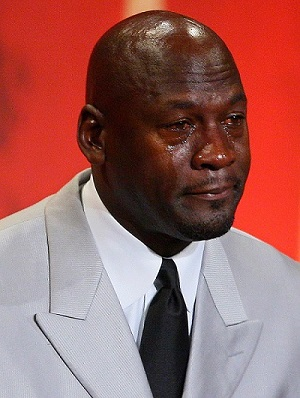
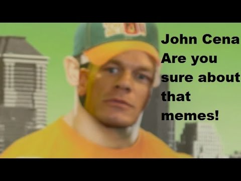
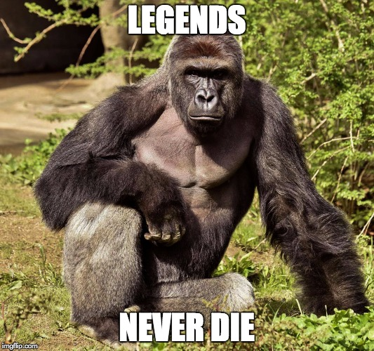
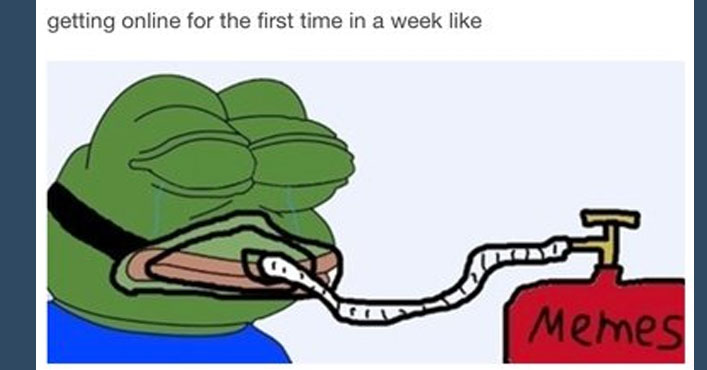

I love making memes I make about 30 memes per day I live sleep dream and eat memes. Memes are my life my dad is Micheal Jordan because he has the best meme of all because he was crying at his hall of fame induction and he so full of emotion he started crying and this dude took a picture and the meme exploaded on the internet.
A Meme is defined as a humorous image, video, piece of text, that is copied (often with slight variations) and spread rapidly by Internet users. Here is an example of one of my favorite meme here is an example meme But there is this one meme about john cena a world famous wwe wrestler now this meme was created when he starred in a cricket wireless ad on youtube were he would suprise his fans by coming out of a poster. So one of his fans were asked by the interviewer what type of animal would john cena be and the little girl said "a tiger because he has the eye of a tiger" then john cena poke his head out the poster and said "are you sure about that" then his theme song came on AND HIS NAME IS JOHNNNNNNN CEEEEENA!!!!! after I saw this meme I made about 30 vines when John cena reacts to different videos and says are you sure about that?

Here is my boi harambe he was a gorilla that was fatally shot at the Cincinati Zoo because some 3 year child that wasnt supervised by his parents climbed over Harambe fence inside his enclosure and was in harambe cage. So when harambe saw the kid fall in his habitat so he grabbed the child by his leg and dragged him around in the water. So Cincanti Zoo decided to shoot the gorilla because the child was in danger of being killed. After the death of Harambe a petition was made on change.org that the 3 year old parents should be held responsible for the death of Harambe.
The petition gained more than 138,000 signatures by monday but the parents never got chargerd for the crime. I made and posted a lot of Harambe memes on the internet so he could never be forgotten because legends never die. I dont get how you cant smoke in the Cincanti zoo but they smoked my boi harambe. This is the website were i make all my dank memes. And i also use an app called ifunny to post and make all of my dank memes like the Harambe meme u see there
This pepe meme is very relatable espetially when my mom takes my iPhone for like a week because i dont clean room because im to busy making dank memes. I honestly dont know what my life would be like without memes they saved life. Memes makes us laugh and give us joy when were having a bad day or a good day in the end memes gives us life.
{kind=link}